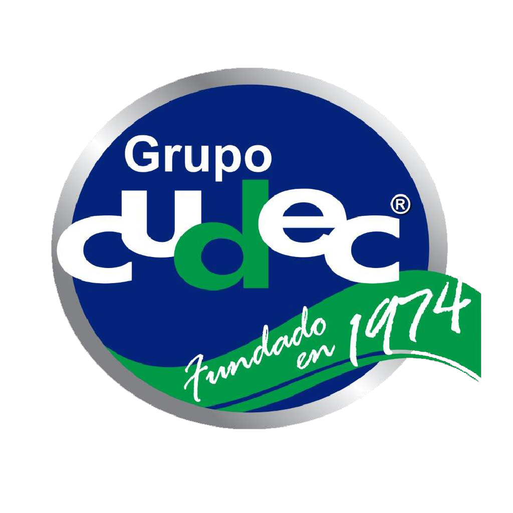

Diplomado Internacional en Constelaciones Familiares en línea
Avalado por la universidad CUDEC México

Constelaciones Andal es una institución que pertenece al Grupo CONSTELAR que cuenta con más de 12 años de experiencia en la formación profesional de consteladores familiares
Intégrate a nuestro nuevo Diplomado Internacional en Constelaciones Familiares en línea, avalado por la Universidad CUDEC México. En este diplomado encontrarás sanación, crecimiento personal y te formarás como un Constelador Familiar profesional con las mejores herramientas.
El Diplomado tiene 16 módulos y 6 módulos de especialización